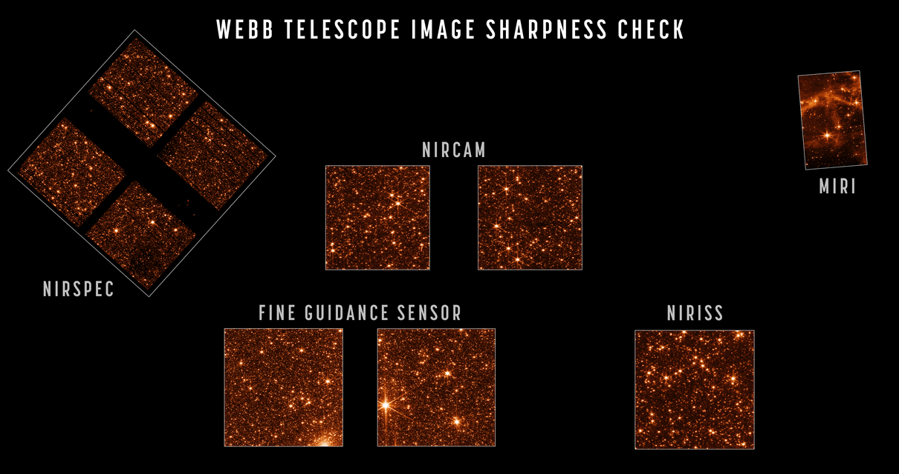
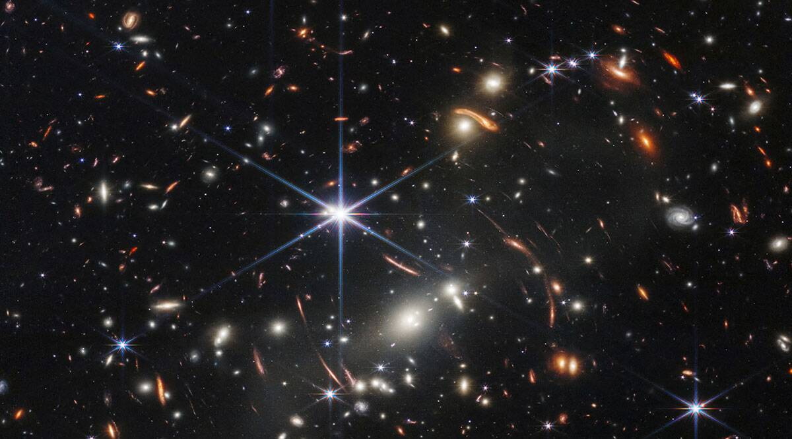
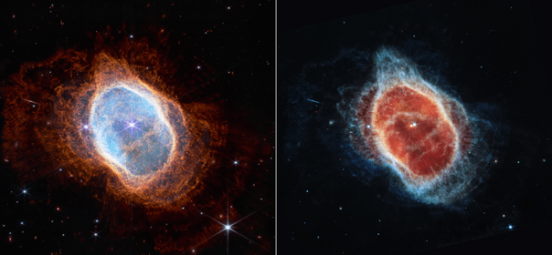
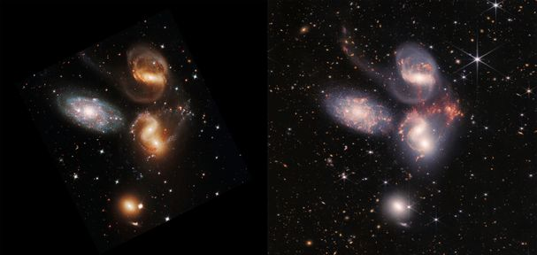
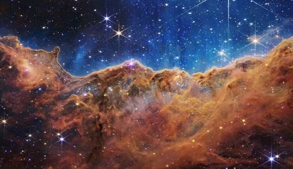

El Telescopio Espacial James Webb publica sus primeras imágenes Artículo editado por ultima vez el: 13/07/2022

Un 28 de abril de 2022, ya habiendo pasado 4 meses desde que James Webb había llegado a su órbita y el largo
proceso de calibración para que este estuviera listo para operar, James Webb nos enviaría sus primeras imágenes de
prueba, con las cuales pudimos darnos cuenta del enorme potencial con el que contaba el telescopio. La NASA publicó
en sus redes sociales unas impresionantes imágenes en las cuales podemos ver las distintas imágenes de prueba con
el nombre del respectivo instrumento que las capturó. Estos instrumentos son NIRCAM (Near Infrared Camera), una cámara
infrarroja especializada en el infrarrojo cercano y es capaz de detectar las primeras estrellas y galaxias del universo, además
de descubrir objetos desconocidos del Cinturón de Kuiper o incluso estrellas enanas marrones cercanas; también está el
NIRSPEC (Near Infrared Spectrograph), un espectroescopio infrarrojo especializado en detectar las primeras luces del universo, el
nacimiento de estrellas, naciemiento de sistemas planetarios y el origen de la vida; el instrumento MIRI (Mid-Infrared Instrument),
que opera en el infrarrojo medio para detectar estrellas más antiguas, otros planetas del universo y tener una mejor
comprensión de la materia oscura; el instrumento NIRISS (Near Infrared Imager and Slitless Spectrograph), que opera en el
infrarrojo cercano, especializado en detectar los componentes químicos de los objetos, como las atmósferas de otros planetas y galaxias; y
el FGS (Fine Guidance Sensor) que rastrea objetos en movimiento y permite enfocarlos. La cantidad de galaxias que se pueden ver
de fondo en cada una de las imágenes es impresionante, además de la nitidez con las que están definidas, nos hacen darnos cuenta de
el enorme potencial con el que cuenta James Webb y su gran aporte a la humanidad.
El Telescopio Espacial James Webb publica sus primeras imágenes con color
Casi 3 meses después de haber realizado sus primeras pruebas, el Telescopio Espacial James Webb estaría listo para operar,
esta vez con objetivos definidos y con los cuales se compararían los resultados con sus antecesores. La NASA y la ESA anunciaron
este evento por todas sus redes sociales, lo que atrajo a muchísima gente de todos los países a presenciar este momento histórico
para la humanidad, ya que sería un 11 de julio de 2022 que se daría a conocer la primera imágen a todo color al público general, y esta
fue nada más ni nada menos que el cúmulo de galaxias llamado SMACS 0723.

Esta imagen es absolutamente increíble, ya que es la vista infrarroja más profunda que se haya hecho en la historia, pero más
impresionante es que este es apenas el comienzo. La NASA ha publicado estas fotos en alta calidad en su página oficial, y si
hacemos zoom en las diferentes imágenes, podremos darnos cuenta de todos los detalles que ha capturado en tan solo una imágen, como
la distorsión de la luz de algunas galaxias, producto del campo gravitacional del mismo cúmulo de galaxias.
Tan solo un día después, un 12 de julio de 2022 se hizo una transmisión en directo en la cuál mostrarían las demás imágenes que estaban
listas para ser publicadas, en este caso, la primera imágen liberada fue de la Nebulosa del Anillo Sur.

En esta imagen, a la derecha se encuentra la misma nebulosa pero tomada desde el telescopio espacial Hubble, y a la izquierda la misma nebulosa
pero tomada recientemente con el telescopio espacial James Webb. La diferencia es abismal en cuanto al detalle, James Webb nos ha permitido ver
muchísimos más detalles de esta nebulosa, producto de una supernova, y que podemos darnos cuenta ahora que se trata de un sistema binario, es decir,
un sistema compuesto por dos estrellas.
Momentos después, se liberaría la segunda imágen, la cual enfocaría al Quinteto de Stephan.

En esta imágen, contrario a la imagen anterior, la imagen que está situada a la derecha es la muestra de James Webb, mientras que la de la izquierda
es la de Hubble. Nuevamente podemos ver la abismal diferencia entre estos y cómo James Webb es capaz de enfocar incluso más galaxias al fondo y enfocar
de mejor manera la colisión de estas galaxias.
Unos minutos después, se liberaría la última imagen a todo color que se tenía lista. Esta tendría como enfoque principal la gran Nebulosa
Carina.

Nuevamente aquí podemos notar el impresionante detalle con el que este telescopio es capaz de tomar fotografías. En este caso podemos incluso ver ese
distintivo brillo de la Nebulosa Carina, que no es nada más que la radiación y calor de todo ese cúmulo de estrellas impactando contra las inmensas nubes
de polvo cósmico.
Sin duda, la emoción de la comunidad científica es notoria, ya que este telescopio nos ayudará a dar muchos pasos hacia adelante como civilización,
ayudándonos a comprobar muchas teorías y a generar muchas otras a partir de ellas.